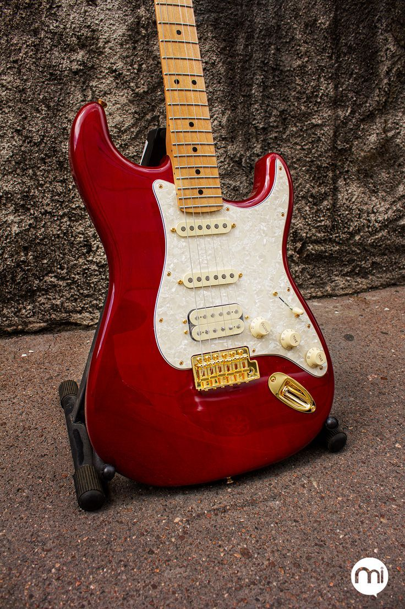
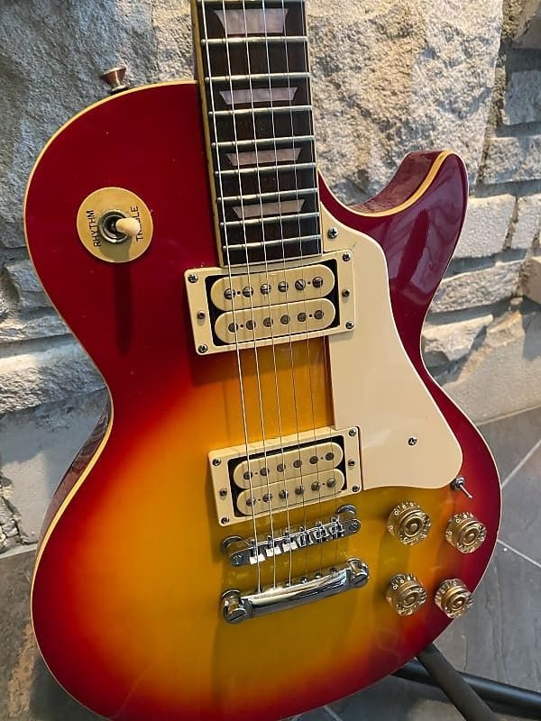
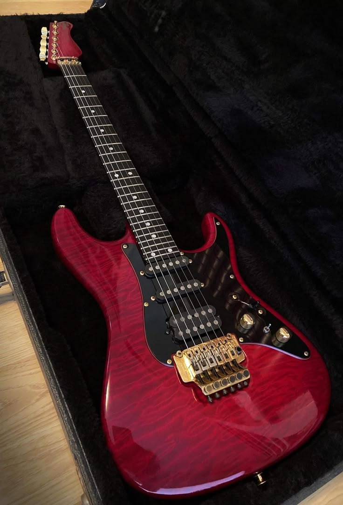

Una historia de poder y expresión
Las guitarras eléctricas han sido mucho más que un instrumento musical: son el símbolo del rock, la rebeldía, y la pasión creativa. Desde su invención en los años 30 hasta su auge en las décadas doradas del rock, estas guitarras han transformado la música y la forma en que la vivimos. En esta página exploramos modelos clásicos con ese aire vintage que nunca pasa de moda.
Sweet Child O' Mine
Ver en YouTubeSeven Nation Army
Ver en YouTubeBack in Black
Ver en YouTubeModelos clásicos que marcaron la historia del rock

Stratocaster Vintage Roja

Les Paul Sunburst
